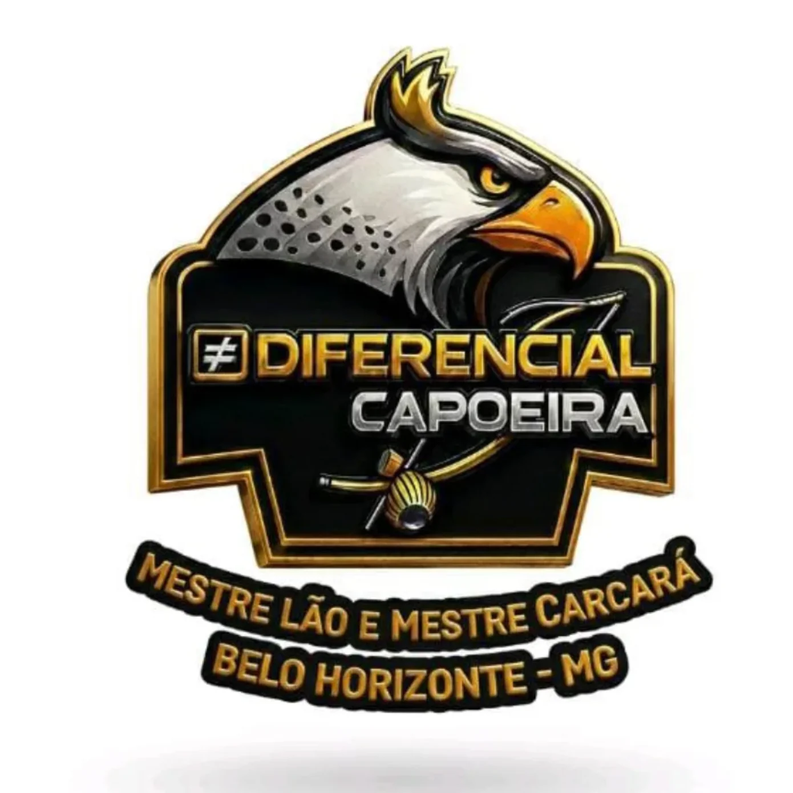
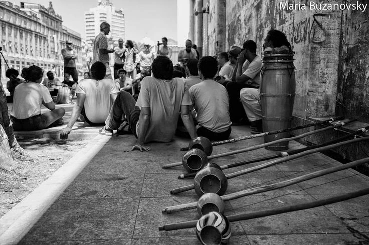
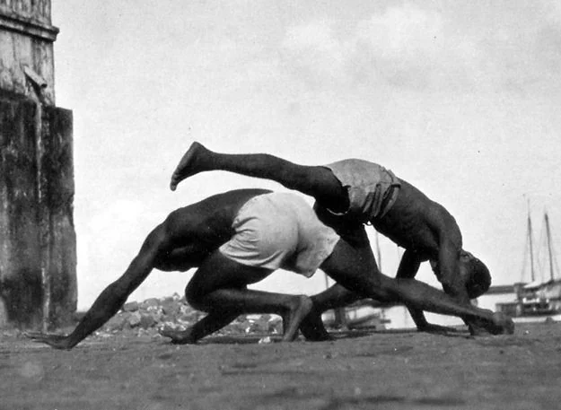
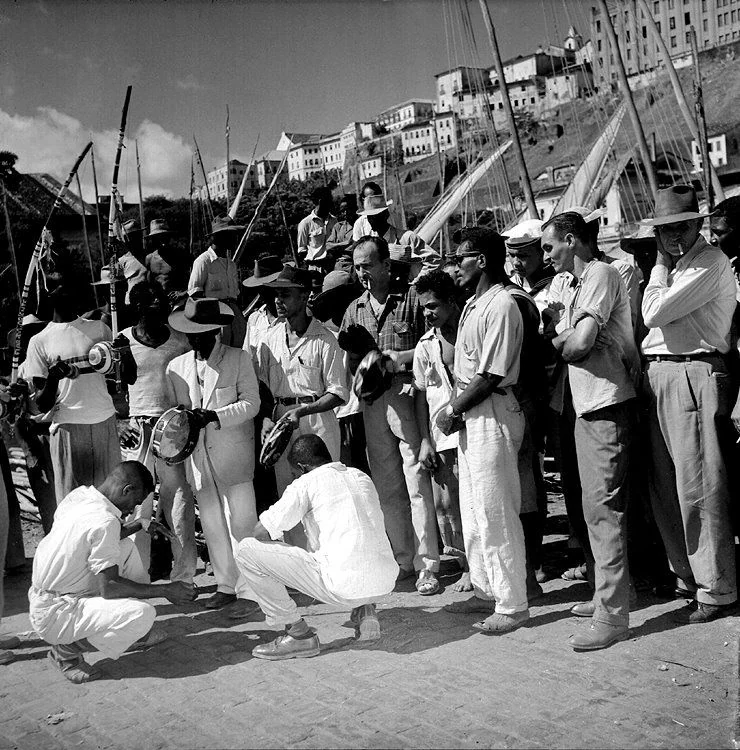
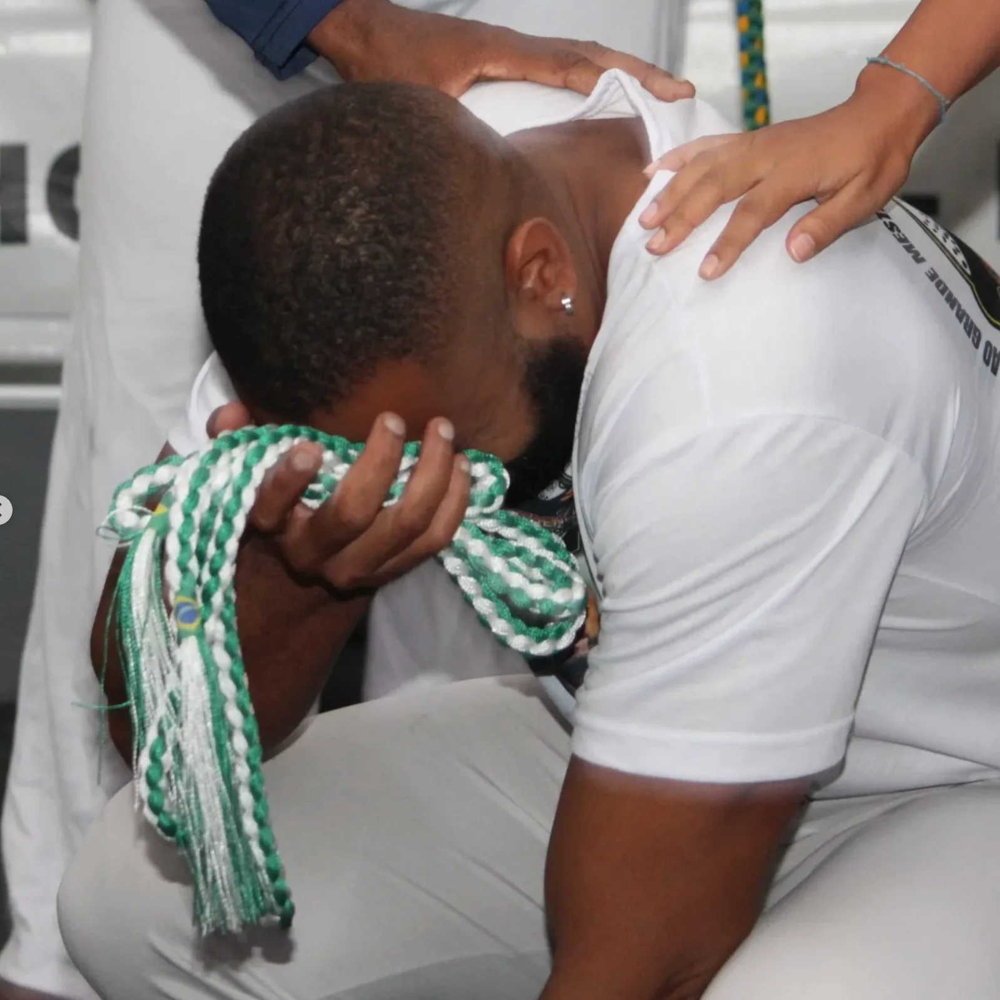
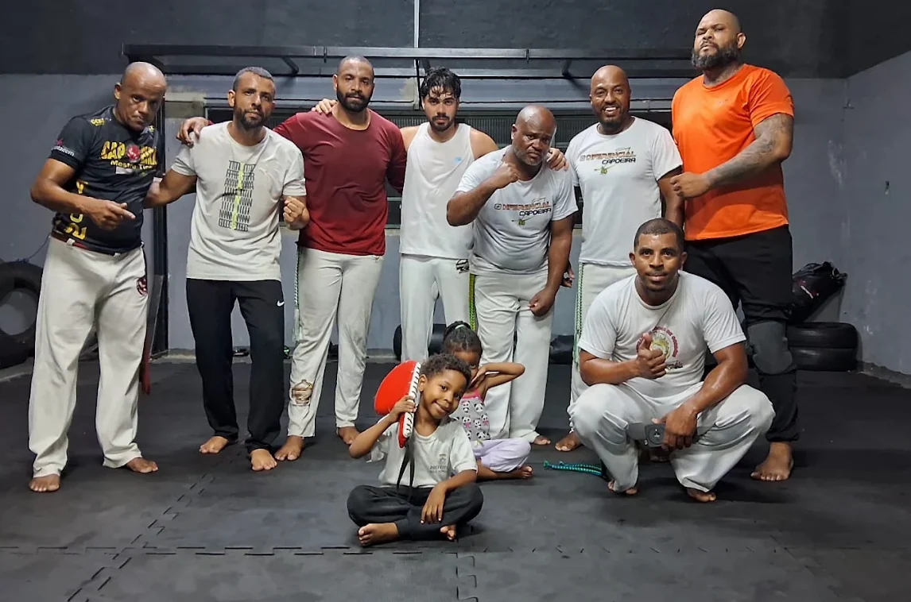
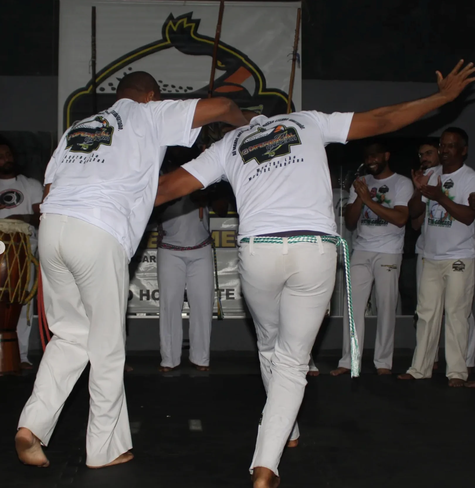

MESTRELÃO
A raiz se fortalece quando o saber é compartilhado.

DIFERENCIALCAPOEIRA Quero fazer capoeira
BELO HORIZONTE, MG · DIFERENCIAL CAPOEIRA
Capoeira é movimento, cultura e encontro.
Tem lugar pra você com Mestre Lão
e Mestre Carcará.
Você pode começar do zero.


A capoeira carrega a força da cultura afro-brasileira. É luta, jogo, música e uma história que segue viva em cada roda.
No Diferencial, essa história encontra o presente: gente que aprende junto, respeita quem veio antes e abre espaço para quem está chegando.
De onde você vem faz parte de quem você é.
Aqui, isso tem valor.

MUITO ALÉM DO MOVIMENTO
O corpo aprende. A roda acolhe.
E cada conquista vira parte da nossa história.
Mestre Lão e Mestre Carcará.
Duas presenças que conduzem o Diferencial
e mantêm a capoeira em movimento.
A raiz se fortalece quando o saber é compartilhado.
Uma história que continua em cada nova roda.
Respeito a quem veio antes. Espaço para quem vem depois. Vem aprender com a gente ↗
O Diferencial tem rosto, tem história
e tem lugar para a sua chegada.


04 / SEU PRIMEIRO PASSO
Não precisa saber jogar.
O primeiro passo é querer conhecer.
TREINO COLETIVO
TERÇAS & QUINTAS19h30 às 21hPrefere um treino individual?
Converse com Mestre CarcaráPergunte sobre os treinos e conte que quer começar.
Confirme o local, o horário e o que levar.
Conheça o grupo e dê seu primeiro passo.
WhatsApp: (31) 99363-9073
PODE PERGUNTAR
Você pode começar do zero. Ao entrar em contato, diga que será sua primeira experiência e peça orientação sobre os treinos.
Os treinos coletivos acontecem às terças e quintas, das 19h30 às 21h, na Rua Márcial Ribeiro de Melo, Jardim Guanabara, Belo Horizonte. Confirme sua chegada com o grupo pelo WhatsApp.
Sim. Converse diretamente com o Mestre Carcará para combinar os detalhes do treino individual. Falar sobre treino individual ↗
Combine os detalhes com o grupo. Pergunte sobre roupa, água e qualquer orientação para o seu primeiro treino.
Fale com o Diferencial e pergunte como visitar um treino. É uma boa maneira de conhecer as pessoas e tirar suas dúvidas.